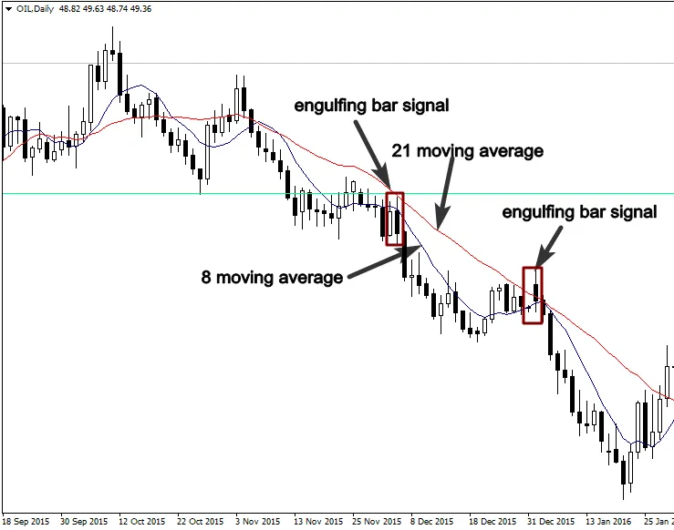

Trading the engulfing bar pattern with moving averages provide a
very profitable trading strategy, however, the lack of knowledge about
using the moving average can damage dramatically your trading
account.
Traders use moving averages in different ways:
-As a trend following tool to identify the direction of the trend, so they
buy the market when prices are above 200 simple moving average.
And they sell the market when it is below the 200 simple moving
average
-To determine whether the market is overbought or oversold we just
watch how prices interact with the moving averages, for example, in
an uptrend, if prices move far from the moving averages, this is an
indication that the market is overbought.
-To predict the trend, change by using the crossover strategy, if the
moving average crosses over another, it is a signal of a trend reversal.
As any trading system, the moving averages have disadvantages; this
is why you have to know how to use it successfully under the right
market conditions.
This trading technical tool doesn’t apply to all markets, don’t never try
to use it in range bound or untradeable markets.
Because you will get lot of false signals, and you will definitively blow
up your trading account.
To the best of my knowledge, using the moving average as a dynamic
support and resistance in trending markets, in combination with an
engulfing bar pattern signal is the perfect way to make money in the
market.
The strategy is very simple, we will use the 21 and the 8-simple moving
averages in the daily and 4-hour time frames, we will define a clear
bullish or bearish market and we simply buy when price pullbacks to
the moving average and an engulfing bar pattern forms.
See the illustration below:
Conversely, if the moving average is trending down, it shows that the
market is in a downtrend, we sell when price retrace to the moving
average.
The screenshot below shows how prices interact with the moving
average as dynamic resistance level, and how the engulfing bar pattern
represented a high probability setup.

Traders use Fibonacci retracement in different ways, however, the
most important Fibonacci retracement levels are the 50% and the 61%
Fibonacci retracements, knowing how to use this tool in conjunction
with Japanese candlestick will definitively maximize your profit
potential.
According to chart technicians, the most major moves retrace around
50 % or 61 % Fibonacci retracement, this knowledge will provide you
with the ability to predict with high accuracy the next major move in a
trending market.
The strategy is very simple, you define a clear uptrend or downtrend,
and then, you define major corrective levels by using Fibonacci
retracement tool, if you see an engulfing bar pattern matches up with
50% or 61 % levels, it is a powerful price action trading signal like we
see in the chart below:
In the example above, the engulfing bar price action signal matches up
with the 50 % and 61 % Fibonacci retracement level, the resistance
level that becomes support is another confirmation to take this high
probability setup.
This trading strategy is very powerful, here is another example below
that illustrates the power of 50% and 61 % Fibonacci retracement:
Trading the market from 50% and 61% Fibonacci levels means you are trading from better price levels, as a result, you will put as many probabilities in your favor as possible, and that will allow you to become one of the most successful traders.
Trend lines give traders an idea about the psychology of the market,
especially, the psychology between buyers and sellers,moreover, it
allows professional traders to determine whether the market is
pessimistic or optimistic.
This technical trading tool is used in different ways, either as support
and resistance by drawing them horizontally, or to identify price and
time by drawing trend lines vertically. There is no wrong way in using
trend lines.
In trending markets, we use simply trend lines to highlight a trend by
connecting swing highs or swing lows in price; this way helps us find
high probability entry setups in line with the general trend of the
market.
See the illustration below:
By connecting the extreme highs, we had a trend line that acted as a
resistance level and the formation of the engulfing bar pattern shows
a good selling opportunity.
If you used just horizontal support and resistance levels, you will miss
this profitable trade.
Learning about how to draw trend lines is never a bad idea, because it
is the simplest analytic tool that you can use to analyze financial
markets, it works in all markets, whether it’s forex, commodities,
futures, or options.
The chart above shows a bullish trend, the trend line acts as a support level, the price action signal that occurred created a great buying opportunity.